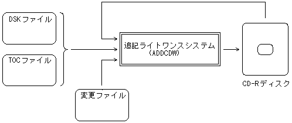

★PROGRAMMER'S GUIDE
★追記ライトワンス
★PROGRAMMER'S GUIDE
★追記ライトワンス
■
｜
進む▼
追記ライトワンスシステムユーザーズマニュアル
１．概要
本書は、追記ライトワンスシステム「ADDCDW」の外部仕様を記述したものです。
1.1 特徴
- 追記ライトワンスシステムADDCDWは、CD-Rディスクに繰り返し書き込むことのできるシステムです。
- （１）CD-Rディスクに複数回の追記が可能
- 従来のライトワンスシステム(SEGACDW)では、CD-Rディスクに１回だけしか書き込むことができません。このため、書き込んだ量がわずかでも、そのディスクを再使用することはできなかった。
本システムは、１枚のディスクに対して複数回の追記が可能です。
- （２）ディスクの全面更新（全面追記）
- 新しいディスクイメージファイルを追記することで、ディスクの内容を全面的に書き換えることができます。この場合、以前に書かれていた内容は見えなくなります。
- （３）ディスクの部分更新（差分追記：追加、削除、置換）
- 一度、CD-Rディスクにボリューム情報やディレクトリ情報などの基本的な内容を書き込んだ後であれば、その後、追加・変更したいプログラムやデータだけを書き込むことができます。
これによって、ディスクの作成時間や使用量を減らすことができます。
- （４）SEGACDWに対して完全上位互換
- SEGACDWの機能を包含しており、マスタ用ディスクの作成も可能です。
- （５）オンザフライ書き込みに対応（Ver.1.70より）
- CDビルダ｢XBLD｣と連携して「オンザフライ書き込み」が行えます。
オンザフライ書き込みではディスクイメージを作成する必要がないので、作業時間の短縮とハードディスク容量の節約ができます。
1.2 システムイメージ
図1.1 システムイメージ図

■
｜
進む▼
★PROGRAMMER'S GUIDE
★追記ライトワンス
Copyright SEGA ENTERPRISES, LTD,. 1997